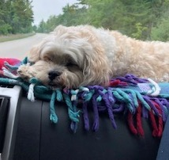
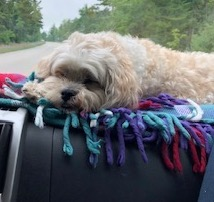
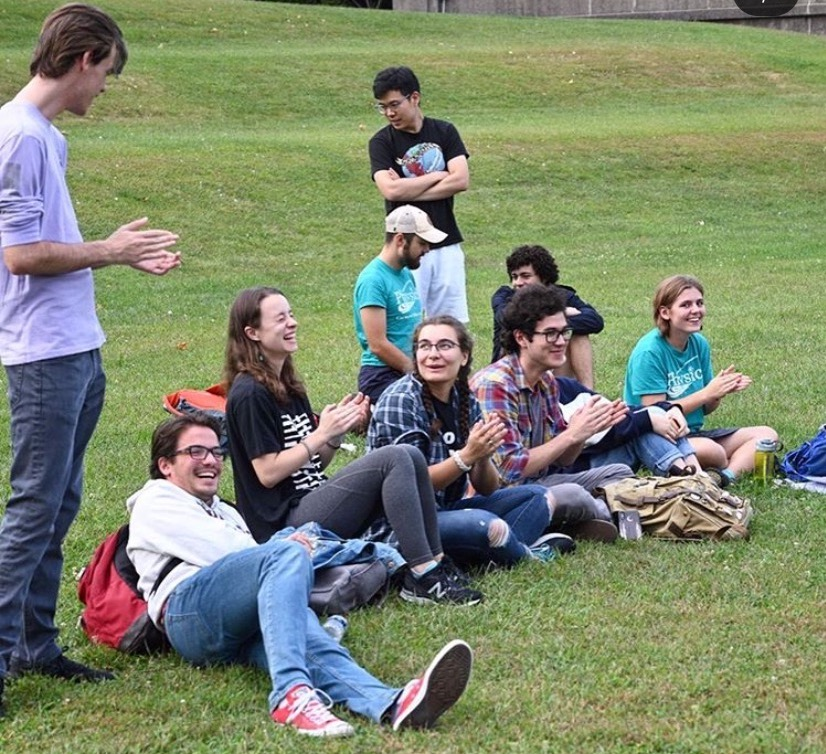
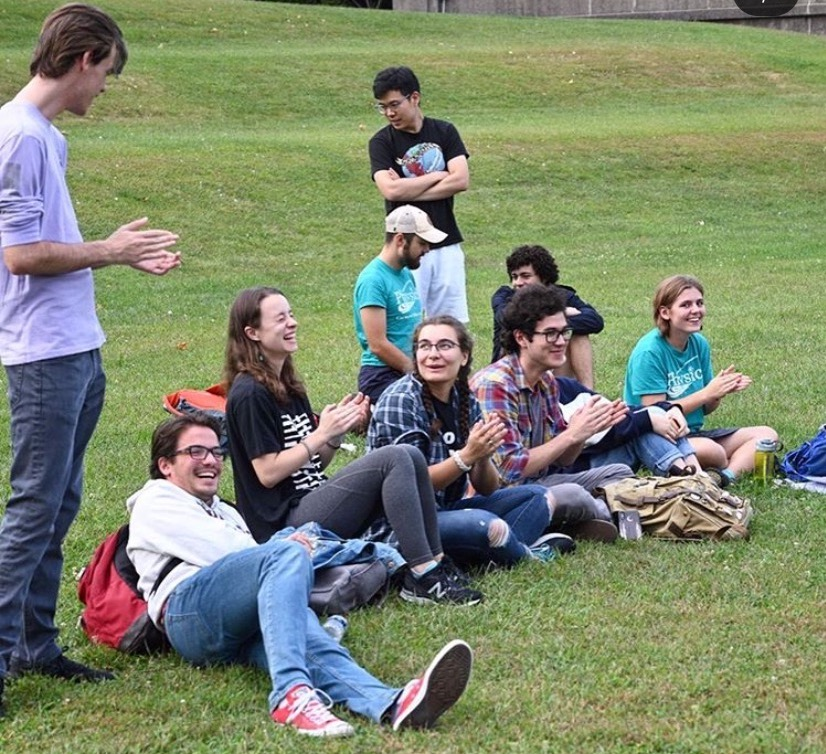

I grew up in the snowy plains of south-central Wisconsin. Culver's and cheese boards were essential to my experience of childhood despite my extreme lactose intolerance. I love hiking in the parks, and my favorite WI state park is Kohler-Andrae state park and my favorite national park is Zion, though I have yet to make it to the top of Angel's Landing.
I am a huge fan of Brooklyn 99, reading books, Holst's The Planets, all fluffy dogs and most cats, and Disney World. I also think space is so cool. I've also been playing the tuba since highschool, and I currently play in the Band without Pants (ie the Kiltie Band).
Look back here occasionally for cute pics of my three dogs: Truffle, Tinker, and Beignet.
 

 
